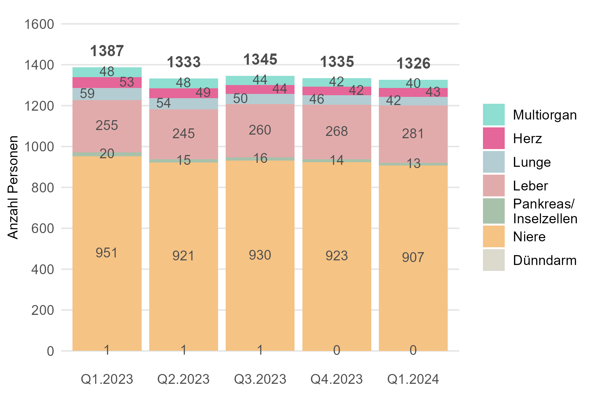
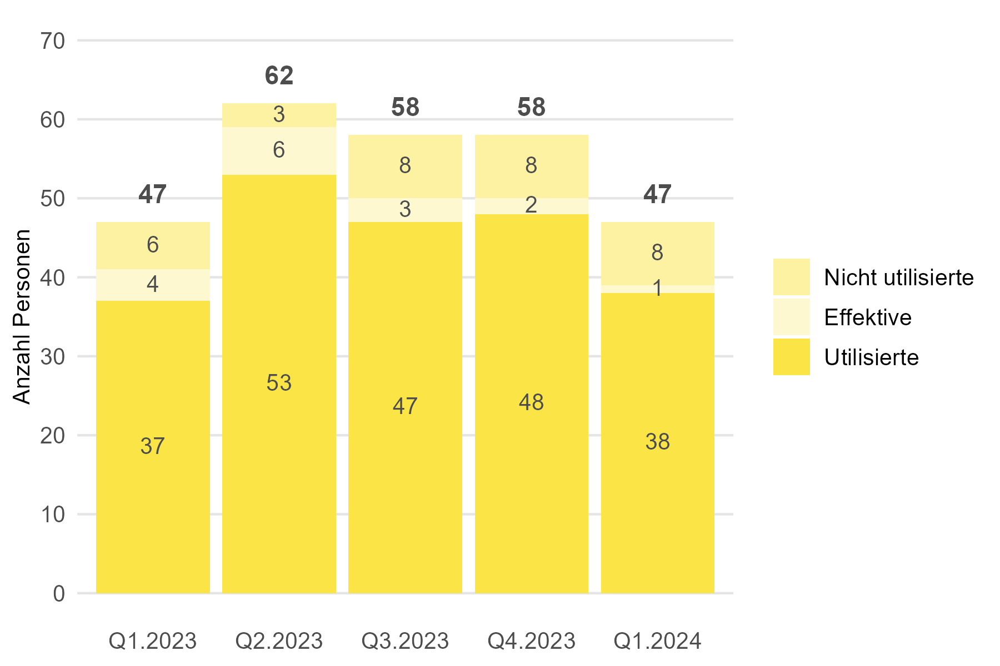
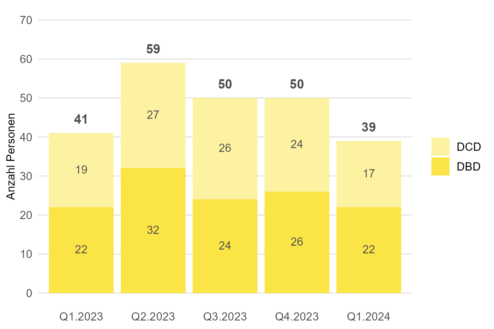
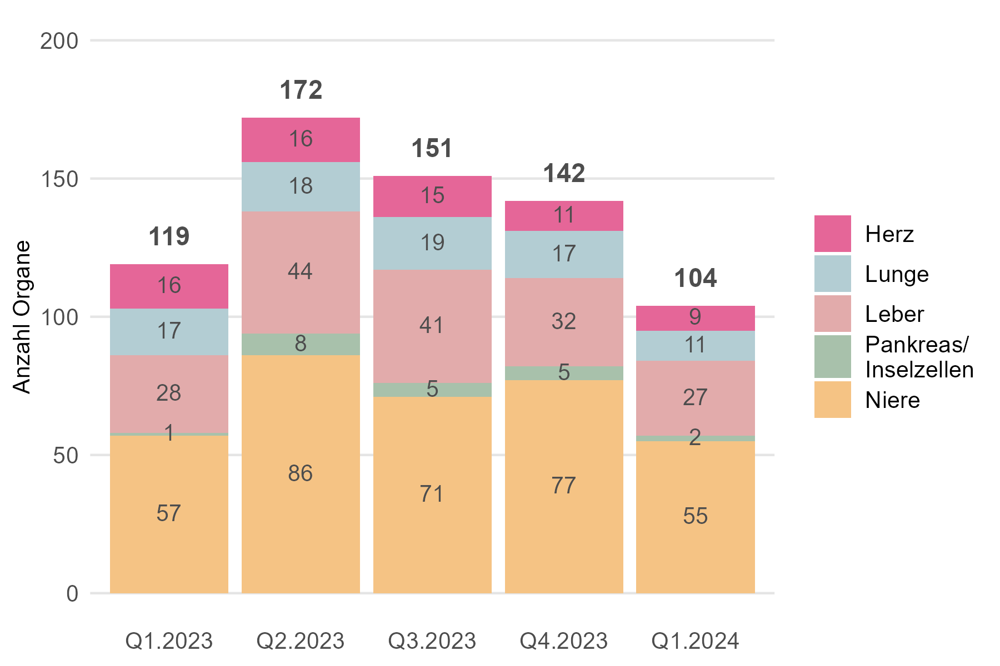
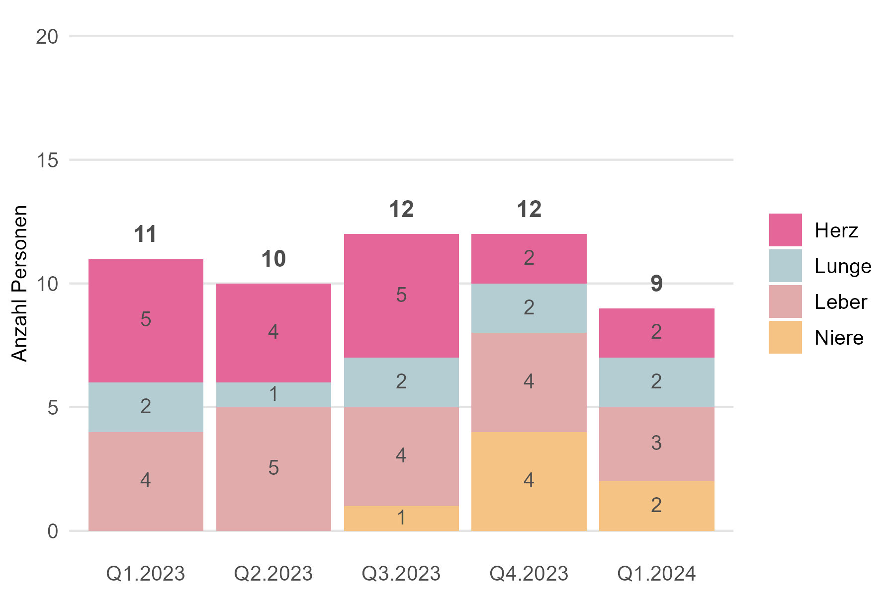
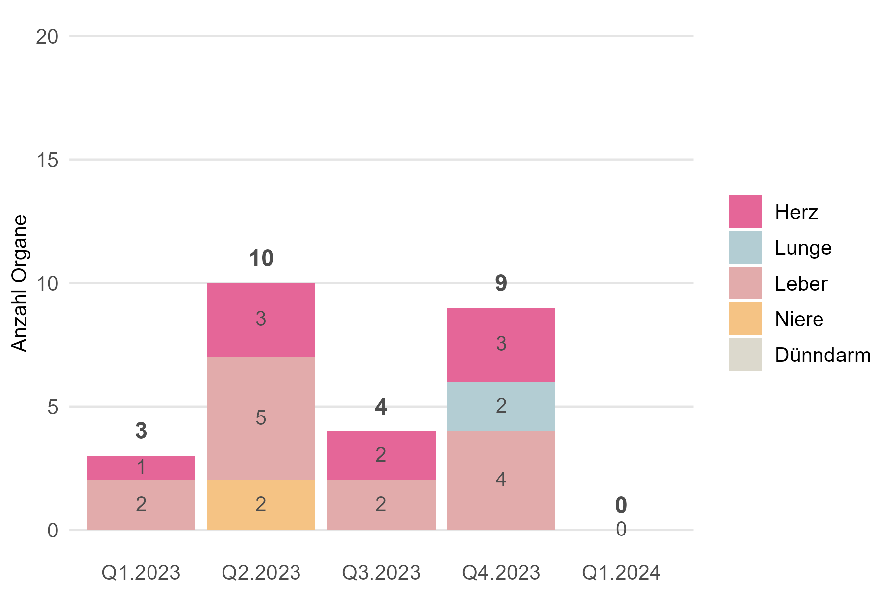
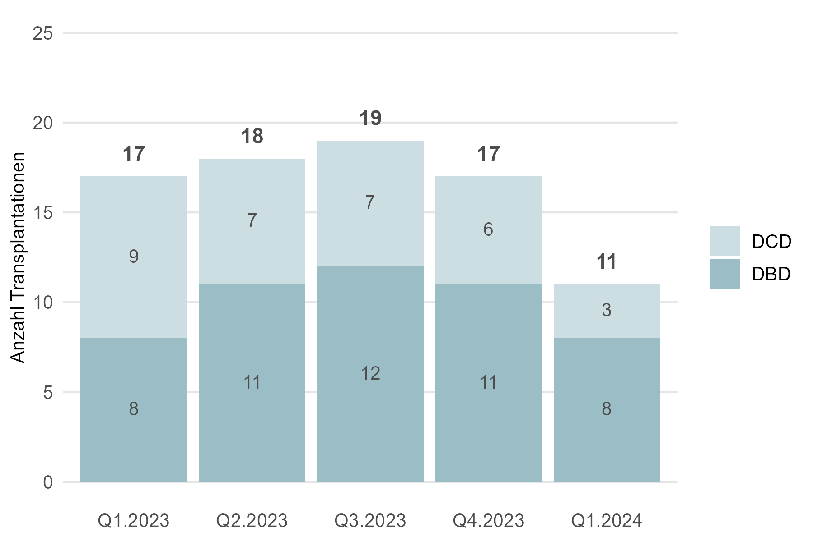
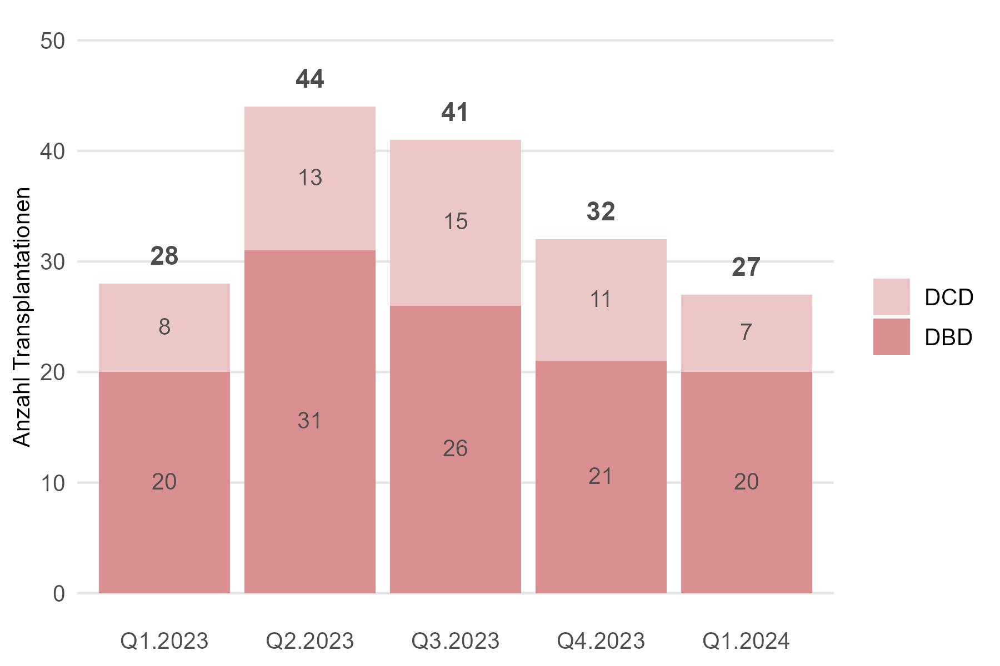
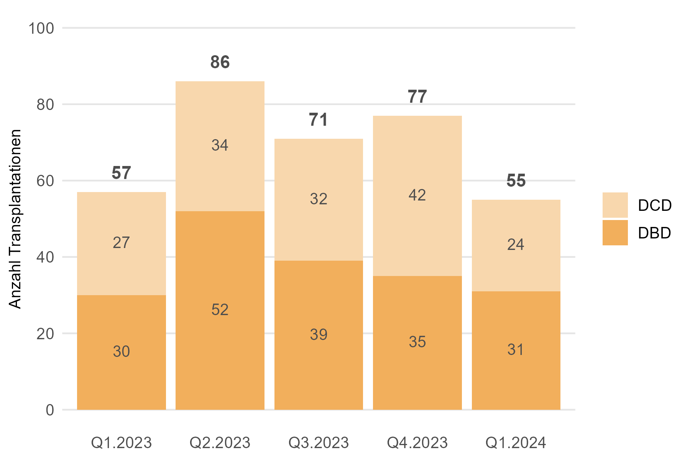

Die Quartalszahlen beinhalten die wichtigsten Kennzahlen zur Warteliste sowie zur Organspende- und Transplantationsaktivität in der Schweiz. Alle Daten stammen aus dem vom BAG betriebenen Swiss Organ Allocation System (SOAS).
Diese Seite befindet sich noch in Entwicklung.
1. Warteliste
Hier finden Sie Kennzahlen zur Warteliste der Personen, die in der Schweiz auf eine Organtransplantation warten. Personen, die für eine Lebendspende gelistet waren, sind in diesem Abschnitt nicht mitberücksichtigt.
Ende März 2024 warteten in der Schweiz 1326 Personen auf eines oder mehrere Organe von verstorbenen spendenden Personen. Im Vergleich zum Vorjahresquartal sind das 61 Personen weniger (-4.4%). 28 Personen sind im ersten Quartal 2024 auf der Warteliste verstorben.
1.1 Personen auf der Warteliste

| Veränderung zum Vorjahresquartal | |
|---|---|
| Anzahl Personen auf der Warteliste | -61 Personen (-4.4 %) |
Ende März 2024 warteten in der Schweiz 1326 Personen auf eines oder mehrere Organe von verstorbenen spendenden Personen. Im Vergleich zum Vorjahresquartal sind das 61 Personen weniger (-4.4 %). Fast die Hälfte (48.8 %) der Personen auf der Warteliste war im inaktiven Status.

| Veränderung zum Vorjahresquartal | |
|---|---|
| Multi-Organ | -8 Personen (-20.0 %) |
| Herz | -10 Personen (-18.9 %) |
| Lunge | -17 Personen (-28.8 %) |
| Leber | +26 Personen (+10.2 %) |
| Niere | -44 Personen (-4.6 %) |
| Pankreas/Inselzellen | -7 Personen (-35.0 %) |
Von den 1326 Personen auf der Warteliste wartete die grosse Mehrheit auf eine Niere (907; 68 %) oder eine Leber (281; 21 %). 40 Personen warteten auf mehr als ein Organ. Ausser bei der Leber befanden sich Ende März 2024 im Vergleich zum Vorjahr bei allen Organen weniger Personen auf der Warteliste.
1.2 Ereignisse auf der Warteliste

| Veränderung zum Vorjahresquartal | |
|---|---|
| Anzahl transplantierte Personen | -2 Personen (-1.4 %) |
| Anzahl verstorbene Personen | -1 Person (-3.5 %) |
Im ersten Quartal 2024 erhielten in der Schweiz 140 Personen eines oder mehrere Organe aus einer postmortalen Organspende. 28 Personen sind im ersten Quartal 2024 auf der Warteliste verstorben.
2. Organspende
Hier finden Sie Kennzahlen für die Schweiz zur Organspende nach dem Tod und zur Organ-Lebendspende.
Im ersten Quartal 2024 haben in der Schweiz 39 Personen ihre Organe nach dem Tod gespendet. Im Vergleich zum Vorjahr sind das 3 Personen weniger (-7.3 %). Von den 39 Personen waren 22 (56.4 %) im Hirntod nach Herz-Kreislauf-Stillstand. Mit 2.4 Organen ist auch die durchschnittliche Anzahl transplantierter Organe pro spendende verstorbene Person zurückgegangen, insbesondere bei der Spende im Hirntod nach Herz-Kreislauf-Stillstand.
2.1 Für eine postmortale Organspende freigegebene Personen

| Veränderung zum Vorjahresquartal | |
|---|---|
| Total freigegebene Personen | +/-0 (+/-0 %) |
| Anteil Nicht Utilisierte (17.0 %) | +4.2 Prozentpunkte |
| Anteil Effektive (2.1 %) | -6.4 Prozentpunkte |
| Anteil Utilisierte (80.9 %) | +2.2 Prozentpunkte |
Im ersten Quartal 2024 wurden Swisstransplant 47 Personen aus der Schweiz für eine postmortale Organspende gemeldet. Das sind gleich viele wie im Vorjahr. Die Utilisierungsrate betrug 80.9 %.
2.2 Spendende verstorbene Personen

| Veränderung zum Vorjahresquartal | |
|---|---|
| Total spendende Personen | -3 (-7.3 %) |
| DBD | +1 (+5.3 %) |
| DCD | -4 (-18.2 %) |
Im ersten Quartal 2024 haben in der Schweiz 39 Personen ihre Organe nach dem Tod gespendet. Im Vergleich zum Vorjahr sind das 3 Personen weniger (-7.3 %).
2.3 Transplantierte Organe pro spendende verstorbene Person

| Veränderung zum Vorjahresquartal | |
|---|---|
| Total Organe pro spendende Person | -0.3 Organe |
| DBD | -0.2 Organe |
| DCD | -0.4 Organe |
Im ersten Quartal 2024 wurden in der Schweiz durchschnittlich 2.4 Organe pro spendende verstorbene Person transplantiert. Im Vergleich zum Vorjahr sind das 0.3 Organe weniger. Insbesondere wurden weniger Organe pro spendende verstorbene Persone im Hirntod nach Herz-Kreislauf-Stillstand transplantiert.
2.4 Spendende lebende Personen
3. Transplantationen
Hier finden Sie Kennzahlen zu Personen, die ein Organ von einer spendenden verstorbenen Person erhielten. Einerseits sind dies Empfängerinnen und Empfänger in der Schweiz, die ein Organ von einer spendenden verstorbenen Person aus der Schweiz oder aus dem Ausland erhielten. Andererseits sind dies Personen im Ausland, die ein Organ von einer verstorbenen Person aus der Schweiz erhielten, wenn in der Schweiz für ein Organ keine passende Person gefunden werden konnte.
Hier könnten die wichtigsten Findings zur Transplantation von Organen in der Schweiz hervorgehoben werden.
3.1 Transplantierte Personen in der Schweiz

| Veränderung zum Vorjahresquartal | |
|---|---|
| Total transplantierte Personen | -16 (-13.6 %) |
| Herz | -6 (-40.0 %) |
| Lunge | -6 (-35.3 %) |
| Leber | -1 (-3.6 %) |
| Niere | -2 (-3.6 %) |
| Pankreas/Inselzellen | +/-0 (+0.0 %) |
Im ersten Quartal 2024 erhielten in der Schweiz 102 Empfängerinnen und Empfänger Organe von spendenen verstorbenen Personen. Im Vergleich zum Vorjahr sind das 16 Transplantationen (rund 14 %) weniger.

| Veränderung zum Vorjahresquartal | |
|---|---|
| Total transplantierte Personen | -2 (-18.2 %) |
Im ersten Quartal 2024 erhielten in der Schweiz 9 Empfängerinnen und Empfänger Organe von spendenen verstorbenen Personen aus dem Ausland. Im Vergleich zum Vorjahr sind das 2 Transplantationen (rund 18 %) weniger.
3.2 Transplantierte Personen im Ausland

| Veränderung zum Vorjahresquartal | |
|---|---|
| Total Transplantationen im Ausland | -3 (-100.0 %) |
Im ersten Quartal 2024 erhielten im Ausland keine Empfängerinnen oder Empfänger Organe von spendenden verstorbenen Personen aus der Schweiz. Im Vorjahr waren es 3.
3.3 Herztransplantationen

| Veränderung zum Vorjahresquartal | |
|---|---|
| Total Herztransplantationen | -7 (-43.8 %) |
| DBD | -7 (-53.3 %) |
| DCD | +/-0 (+0.0 %) |
Im ersten Quartal 2024 erhielten in der Schweiz 9 Personen eine Herztransplantation. Im Vergleich zum Vorjahr sind das 6 (-40 %) Herztransplantationen weniger.
3.4 Lungentransplantationen

| Veränderung zum Vorjahresquartal | |
|---|---|
| Total Lungentransplantationen | -6 (-35.3.0 %) |
| DBD | +/-0 (+/-0.0 %) |
| DCD | -6 (-66.7 %) |
Im ersten Quartal 2024 erhielten in der Schweiz 11 Personen eine Lungentransplantation. Im Vergleich zum Vorjahr sind das 6 (-67 %) Lungentransplantationen weniger.
3.5 Lebertransplantationen

| Veränderung zum Vorjahresquartal | |
|---|---|
| Total Lebertransplantationen | -1 (-3.6 %) |
| DBD | +/-0 (+/-0.0 %) |
| DCD | -1 (-12.5 %) |
Im ersten Quartal 2024 erhielten in der Schweiz 27 Personen eine Lebertransplantation aus einer postmortalen Organspende. Im Vergleich zum Vorjahr ist das 1 (-3.6 %) Lebertransplantationen weniger.
3.6 Nierentransplantationen

| Veränderung zum Vorjahresquartal | |
|---|---|
| Total Nierentransplantationen | -3 (-5.2 %) |
| DBD | +/-0 (+/- 0 %) |
| DCD | -3 (-11.1 %) |
Im ersten Quartal 2024 erhielten in der Schweiz 53 Personen eine Nierentransplantation aus einer postmortalen Organspende. Im Vergleich zum Vorjahr sind das 2 (-4 %) Nierentransplantationen weniger.
3.7 Pankreas/Inselzellen-Transplantationen

| Veränderung zum Vorjahresquartal | |
|---|---|
| Total Transplantationen Pankreas/Inselzellen | +/-0 (+/-0.0 % |
| DBD | +/-0 (+/-0.0 %) |
| DCD | +/-0 (+/-0.0 %) |
Im ersten Quartal 2024 erhielt in der Schweiz zwei Personen eine Pankreas/Inselzellen-Transplantation. Im Vorjahr waren es ebenfalls zwei Personen.